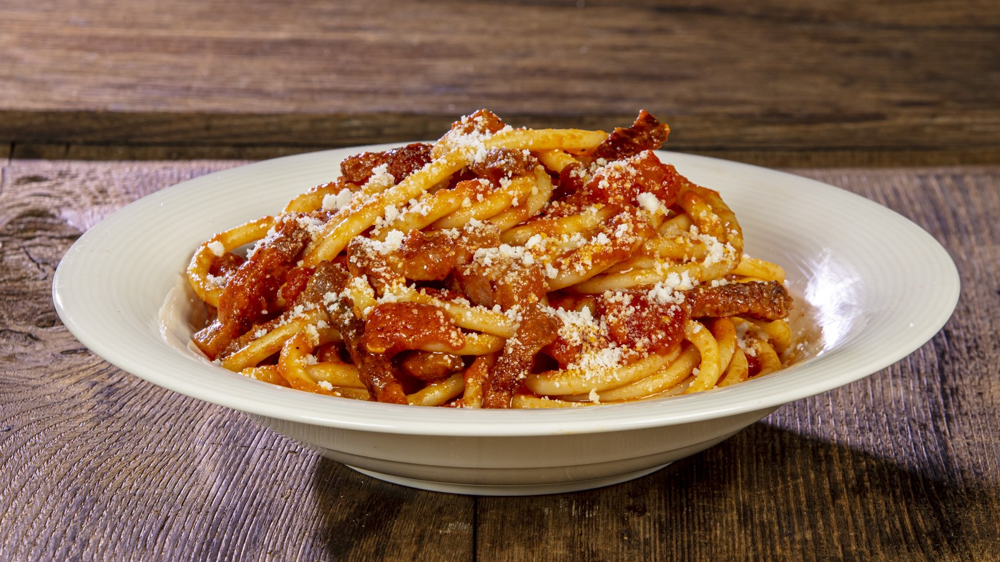

A delicious and cheap ramen that is bursting with umami. If you're cold and poor (sadly the two often go hand in hand), then consider whipping up this special to feed yourself cheaply for the week.

Ingredients
- 1kg Pork Mince
- 30g Ginger
- 4 tbsp Miso Paste
- 1 tbsp Hon-Dashi Granules
- Chilli Oil
- 1 Bullet Chilli
- 1 Shallot
- 8 cloves Garlic
- 1 ltr Chicken Stock
- Spring Onion
- 1 Bok Choi
- 1 Egg
- Ramen Noodles
Steps
- Brown the pork mince: Put a pan on high heat with minimal vegetable oil. When the oil starts to lightly smoke, place the pork mince into the pan. Allow to sear nicely for a couple minutes before turning over. Continue to sear, then boil excess liquid off. Wait until pork very nice and coloured before moving onto plate.
- Colour shallots, garlic and ginger: Add garlic, shallots and ginger to now empty pot. Stir, on med-high head, until past transluscent and a slightly golden. Re add the pork mince and combine, with slow purposeful stirs. Add chilli. Next, add in 4 tablespoons of miso paste and stir in thoroughly. Allow to cook for 1-2 minutes.
- Add hot stock and Hon-DashiAdd hot stock to the mince mix and stir, deglazing any residue on bottom of pot. Once a slight boil has developed, add in Hon-Dashi.
- Add hot stock and Hon-DashiTurn down heat and allow broth mix to sit and barely even simmer.
- Cook noodles, egg and prepare garnishesCook noodles for 80% of recommened cooking time, then drain. Boil egg in shell for ~6minutes and then peel (you want it to be soft boiled). Chop up any garnish and boil bok choi
Combine and Plate UpPlace noodles into pot. Serve, placing garnishes on top.
Site Directory